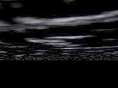
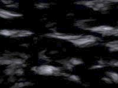

Quand vous modifiez un fichier Povray
exécuté à partir de Geomorph, démarrez
Geomorph à partir d'une console X, afin de lire les messages
d'erreur Povray.
Quand vous modifiez un fichier Povray
exécuté à partir de Geomorph, démarrez
Geomorph à partir d'une console X, afin de lire les messages
d'erreur Povray.| Version 0.40 et
ultérieures Maintenant il suffit d'inclure geomorph.inc, qui inclut les trois fichiers. Ainsi la séquence d'appel sera: #declare rock_color = 0.5*(<0.72,0.66,0.4>) ; #declare rock_turbulence=0.2; ... #include "geomorph.inc" |
| Version
"plan"  |
Version
"sky_sphere"  |
| Version 0.40 et
ultérieures Le terrain doit maintenant être déclaré de la façon suivante: #declare hf = height_field { png main_terrain ... "main_terrain" est une variable créée dans geomorph.inc. Elle contient le nom du terrain en cours d'édition, si celui-ci a été enregistré, ou test.png, sinon. Le fichier déclare aussi des variables contenant des cartes secondaires, comme "water_map", "background_map", "ground_map" et "crater_map", pour certaines scènes les requérant. |
Retour à
l'index de la documentation